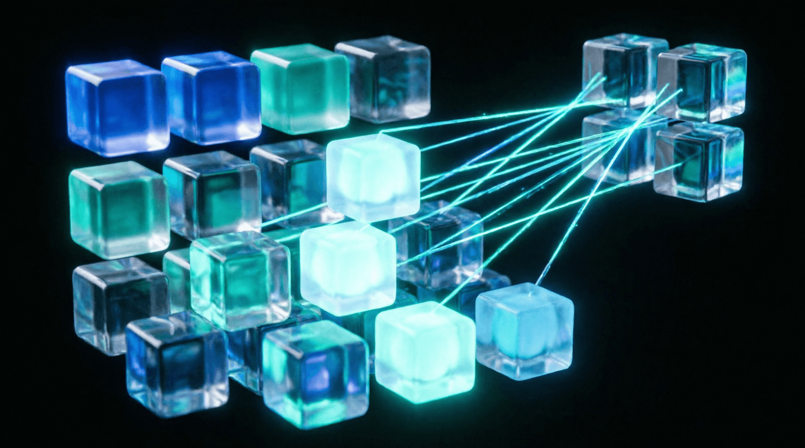

Урок 11: Механизм внимания (Attention)
ML-инженер • Блок 3: Современные тяжелые архитектуры
Добро пожаловать в Блок 3: Современные тяжелые архитектуры. Рекуррентные сети обрабатывают токены последовательно, что делает невозможным их параллельное обучение на GPU. Революционная статья «Attention Is All You Need» предложила отказаться от рекурсии в пользу механизма внутреннего внимания (Self-Attention). Этот механизм позволяет за один шаг рассчитать контекстные связи между абсолютно всеми словами в тексте, независимо от расстояния между ними.
При больших размерностях векторов ($d_k$ — скрытая глубина ключей) скалярное произведение $Q K^T$ принимает огромные по модулю значения. Из-за этого функция Softmax уходит в области насыщения, где её производные близки к нулю (проблема затухания градиентов). Деление на $\sqrt{d_k}$ возвращает дисперсию распределения к единице и спасает обучение от остановки.
Ниже представлена чистая тензорная реализация механизма внимания, поддерживающая опциональное маскирование для авторегрессионного декодирования языковых моделей.
import torch
import torch.nn as nn
import math
class ScaledDotProductAttention(nn.Module):
def __init__(self):
super().__init__()
self.softmax = nn.Softmax(dim=-1)
def forward(self, q, k, v, mask=None):
# q: [Batch_Size, Seq_Len, D_k]
# k: [Batch_Size, Seq_Len, D_k]
# v: [Batch_Size, Seq_Len, D_v]
d_k = q.size(-1)
# Шаг 1: Вычисляем оценки сходства (энергию) через матричное умножение Q и K^T
scores = torch.matmul(q, k.transpose(-2, -1)) / math.sqrt(d_k)
# Шаг 2: Применяем маску, если она передана
if mask is not None:
# Заполняем позиции, где mask == 0, экстремально маленьким числом (-1e9)
scores = scores.masked_fill(mask == 0, -1e9)
# Шаг 3: Превращаем оценки в вероятностное распределение весов
attention_weights = self.softmax(scores)
# Шаг 4: Мультипликативно взвешиваем значения V на полученные веса
output = torch.matmul(attention_weights, v)
return output, attention_weightsПри генерации текста (например, в моделях класса GPT) текущий токен не должен иметь возможности «заглядывать в будущее» и подсматривать слова, которые стоят справа от него. Для этого создается нижняя треугольная матрица, скрывающая последующие элементы.
seq_len = 4
# Генерация треугольной матрицы из единиц
causal_mask = torch.tril(torch.ones(seq_len, seq_len))
print("Каузальная маска:\n", causal_mask)
# Токен на позиции 0 видит только себя. Токен на позиции 3 видит 0, 1, 2, 3.Возьмите написанный класс ScaledDotProductAttention и прогоните через него три случайно сгенерированных тензора. Создайте и передайте в метод forward каузальную маску (causal mask) с помощью функции torch.tril. Убедитесь и докажите с помощью print(), что в итоговой матрице весов внимания attention_weights верхний правый треугольник строго заполнен нулями.
import torch
import math
import torch.nn as nn
class ScaledDotProductAttention(nn.Module):
def __init__(self):
super().__init__()
self.softmax = nn.Softmax(dim=-1)
def forward(self, q, k, v, mask=None):
d_k = q.size(-1)
scores = torch.matmul(q, k.transpose(-2, -1)) / math.sqrt(d_k)
if mask is not None:
scores = scores.masked_fill(mask == 0, -1e9)
attention_weights = self.softmax(scores)
output = torch.matmul(attention_weights, v)
return output, attention_weights
# --- Тестирование ---
if __name__ == "__main__":
B, S, D = 1, 4, 64
q = torch.randn(B, S, D)
k = torch.randn(B, S, D)
v = torch.randn(B, S, D)
# ВАШ КОД ЗДЕСЬ:
# 1. Создайте causal_mask размера [1, S, S] с помощью torch.tril
# 2. Инициализируйте слой attention
# 3. Прогоните forward с маской
# 4. Распечатайте attention_weights и убедитесь, что верхний треугольник нулевойimport torch
import math
import torch.nn as nn
class ScaledDotProductAttention(nn.Module):
def __init__(self):
super().__init__()
self.softmax = nn.Softmax(dim=-1)
def forward(self, q, k, v, mask=None):
d_k = q.size(-1)
scores = torch.matmul(q, k.transpose(-2, -1)) / math.sqrt(d_k)
if mask is not None:
scores = scores.masked_fill(mask == 0, -1e9)
attention_weights = self.softmax(scores)
output = torch.matmul(attention_weights, v)
return output, attention_weights
if __name__ == "__main__":
B, S, D = 1, 4, 64
q = torch.randn(B, S, D)
k = torch.randn(B, S, D)
v = torch.randn(B, S, D)
# 1. Создание маски [S, S] -> добавляем размерность батча [1, S, S]
causal_mask = torch.tril(torch.ones(S, S)).unsqueeze(0)
# 2. Запуск
attention_layer = ScaledDotProductAttention()
out, weights = attention_layer(q, k, v, mask=causal_mask)
print("Вес внимания:\n", weights.squeeze())
# Вывод покажет нули в правом верхнем треугольнике!Функция softmax вычисляет $e^{x}$. Если мы хотим, чтобы определенный элемент получил вес 0 (игнорировался), нам нужно, чтобы его экспонента была равна 0.
Но $e^0 = 1$, а $e^{-\infty} = 0$.
Приложение бесплатное. Было и останется.
Если проект помог вам или вашим близким — можете поддержать разработку добровольным переводом.
❤️ Спасибо за поддержку!
Перейти в каталог
